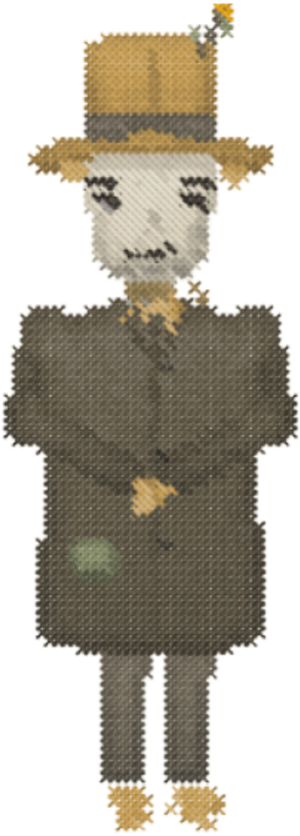
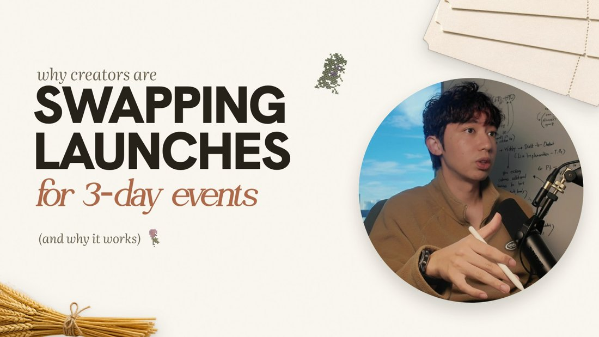
Read it once, front to back. After that you only need part 4 (the process) and part 5 (the checklists) open while you work.
This guide is for anyone who makes slides for After Harvest: the YouTube videos, the VSL, webinar decks and the Day 1-3 decks we build for clients. It puts three things in one place:
1. Ask "How do we show this?" of every line, and answer with a real thing: a screenshot, a receipt, a real photo [37:09].
2. The most important words are the biggest. Titles, names, numbers and prices usually are not [1:55].
3. Slides are free. One idea per slide, each part appearing as it is said [6:09, 21:18].
Jason's rules come from his video How to Design Webinar Slides (Nobody Does This Right) (43 min, youtube.com/watch?v=rAwgv2hThVw), torn down line by line in the repo. Timestamps like [24:35] point into that video. A few rules come from his other three videos and are marked with the video's name. Sean's rulings (in his words, dated) sit in rulings.md.
When they disagree, Sean's ruling wins until he decides otherwise. Every disagreement is listed in part 7.
Jason Fladlien has designed "32 PowerPoint presentations that have generated over seven figures a piece" [0:00]. In this video he redesigns nine of his followers' decks, before and after. These are his rules.
His whole argument in one line: designers "go for form and not function. See, you'll get something that looks really nice, but will also crush your conversions" [0:18]. Every rule below is about function: what is biggest, what is real, and what appears when.
"These are design principles that are functional. They're made to persuade. They augment the information and the education that you're using to have the transformation occur." [42:18]
What it meansA slide exists to move the viewer one step closer to a belief. Anything on it either helps that or gets in the way.
In FladdyBefore you design, write the belief the slide must leave (part 4, step 2). Judge the finished slide against that belief, not against how nice it looks.
"If you look too professional on the designs, you're less trustworthy on the webinar ... It's better to look ugly with design than it is to look pretty because they'll get distracted by the glitz and the glamour and they'll also trust you less." [15:46-16:12]
What it means"You are not selling design to designers." Glossy, agency-style slides read as marketing.
In FladdySean's ruling is "nicely made, not messy", so we do not go ugly. We keep the spirit: crafted, but warm and real, never slick (no gradients, glows, neon, stock models). See part 7, question 1.
"This looks cool but it's not functional. This looks less cool but it is way more functional and it's also easier to design." [12:45] "Making it look pretty like this takes like 10 more minutes or 30 more minutes per slide." [36:47-37:06]
In FladdySpend design time where it moves the belief: the mechanism slide, the proof, the reveal. A plain list is fine for a plain point.
"When people are on webinars, they care about information. They don't care about design." [40:15]
In FladdyIf a design choice makes the information slower to read, the information wins.
"'How do we show this?' This is always the question I ask myself when I design slides." [37:09]
What it meansFor "12 weekly live build sessions every single Wednesday" he did not write the sentence. He drew the weeks, the days, and the 12 sessions popping into the calendar, then the calendar "getting filled with more more more value" [37:09-37:31].
In FladdyEvery slide spec has a "how do we show this" line (part 4). For After Harvest the answers are usually things we already have: a lead's real landing page, a dream page, the revenue calculator, a real email, a real registrant number, a real chat.
"I didn't say you post. I showed the post from LinkedIn." [17:35] "We use words too much and we use visuals too little." [4:19]
DoShow the post, the inbox, the page, the receipt. Don'tWrite "you post on LinkedIn" over an icon.
"I do not like AI for design hardly at all. But there's a couple instances where it's okay" [7:22] ... "We only go to stock when we really don't have anything else." [9:07]
What it meansFor Marvin's story he wanted the real photos of him in the seminar rooms, the real receipts ("the amounts of money that he paid because this will become a price anchor later" [8:16-8:29]), the real houses before and after. AI was allowed only to fill a missing real photo or to animate a real document [7:29-7:46, 10:07].
In FladdyOrder of choice: our own real thing, then a real thing from the person we are talking about (their page, their post), then a licensed stock photo marked as a placeholder (file name starts stock-), which gets replaced before the video ships.
"We want to show it in the real world visually as much as possible. Not metaphorically, not conceptually, not with AI generated images. Screenshots are your best friend on a webinar." [20:05-20:17] "I go to the actual source and I screenshot it. I still put the source underneath of it. I highlight the key part." [20:43-20:50]
How
"People don't understand numbers very well ... if I tell you think of 30, you have trouble thinking of it." [9:39]
What it means30 houses lost became 30 house emojis, or "a house a day for 30 days" on a calendar [9:58]; 350 build hours became 350 clocks [35:42]; 100 viewers became a grid of 100 faces [18:42]. A changed number can be shown on the real document: the 8 of a credit score 820 crossed out, a 5 written in [10:15].
In FladdyRegistrants, buyers, days and years are all countable. "Nine years" is nine crossed-off calendars before the one launch.
"If we're going to use the metaphor of the hamster wheel, then visually we have to stay consistent with it." [16:20] "He's using the word levels, but he's not showing it in levels." [24:19] "I don't think we need a metaphor at all." [32:08]
In FladdyThe harvest is our brand metaphor. Where it fits the point (sow on Day 1, harvest on Day 3), carry it fully. Where it does not, show the real thing instead. Never mix two metaphors on one slide.
"You can do so much with arrows and screenshots that it's insane." [18:54]
What it meansAndrew's LinkedIn post became "RIP" after 6 hours, then seven posts for seven days each to RIP, then calendars and a hundred people [16:52-18:42]. The same pictures return and change, so the slides tell one story.
In FladdyThe Launch Lab ticket, the Jay chat and the three days should each return and change rather than appear once.
"They make the least important thing the biggest thing and therefore the center and focus of attention when it should be the other way around." [1:55] "You've been taught wrong about PowerPoint your whole life." [13:09]
Usually least importantthe title [13:18], the presenter's name ("they already know who he is" [11:31]), the system's name [23:42], numbers ("Why we like to make numbers the biggest thing on our slide? I will never understand" [35:13]), step numbers [33:24], the price [41:22].
In FladdyAsk: which words carry the belief? Those are the biggest. A section title like "step 3:" goes small top left.
"You want to tell a story with the titles as much as possible." [22:52]
What it meansAlex's label became a question: "If you know what to do, why doesn't it stick?" "This progresses the story in an active voice" [26:05-26:16].
Do"Same list. Why does the event sell more?" Don't"Why events sell more".
"We should not design things to go from left to right when it comes to list and bullet points and such. We should design them from go from top to bottom." [1:26]
Side by side is fine only for a true sequence of events [32:52]. No sideways text, no ladders that read bottom up [32:12].
"This is a great way to keep design simple but make the important information that you want to convey stand out." [7:06]
The key piece is bolder, a little bigger, and in the second colour [10:44]. Colours may separate the steps of a process [33:37].
In FladdyInk plus rust. Sage is a ground (a band or a field), not a second accent. The props keep their own colours but stay small and at the edges.
"Even though it's one sentence, I'm making it as easy as possible for the audience to take in." [7:55-8:06]
The less important half of a line goes smaller, same font, maybe a lighter weight.
"Just one font. Couple different faces. So there's bold, there's semibold, and then there's normal. And then that's it." [33:10] Italics: "I tend to not use them." [13:35]
In FladdySean's ruling gives us three type voices (part 2.3). House rule: at most two voices on one slide, plus the small source line. See part 7.
"Bigger fonts are better than smaller fonts functionally. Design-wise, they don't look as nice." [14:02] The best buyers are "30, 40, 50 plus" with worse eyesight, "including me" [14:17-14:33].
In FladdyAt 1920 x 1080: headline 112-176px, the key line 56px or more, a supporting line 40px or more, source lines 18-20px. YouTube is watched on phones.
"I would not make it sig speech because they don't know what sig necessarily is" [40:45]. No numbering when "you can count three" [28:10]; step numbers stay tiny [33:32].
Elements that "don't add to the persuasive capabilities and so therefore they detract." [5:34-5:52]
What he removesdecorative swooshes and logos, stock photos, taglines (keep one on the title slide at most), the presenter's name, highlighter graphics, icons, glows, background images, "level" labels, step numbers, the presenter's photo on the CTA, extra calls to action [5:37-41:34].
In FladdyOur props are a deliberate exception (Sean wants slides full and a little playful). The limit: two props a slide, at the edges, never near the key words, and each should mean something.
"If I'm going to use a lot of noise on a slide, which I tend to avoid, it's going to be overwhelming proof." [27:57]
A wall of before-and-after photos or results is the one place where a crowded slide is right.
"If you have a very elaborate design, you have to stay within the containment of that design." [33:47]
A step slide reuses the mechanism slide's own element instead of a new decoration [34:25].
Nothing key in the photo behind the words; put a black box over it at lowered opacity so the image "peaks through" and the type lives on top [39:22-40:01].
"I don't use just one slide to tell a story. Slides are free. So, we should use as many of them as we possibly can." [6:05-6:09]
Marvin's one bio slide became eight, one line each [6:45]. The exception: keep two things on one slide when splitting would break the context ("Two words, two dollar figures, one slide" [28:57-29:28]).
"My average webinar presentation is about 500 slides ... Typically you see motion on my designs every six seconds." [28:44-28:52]
In FladdyIn a teaching stretch, something new appears every 5-10 seconds: a new slide, a new line, a highlight that moves.
"The beauty of animation isn't because it looks cool. It's because it can focus the attention on the information sequentially." [21:18]
Bullet one appears, then two, then three [12:14]. If the whole list must stay up, "animate the highlight behind it" instead [12:10].
"Tables are great at communicating information, especially when you animate them." [29:59] "You can lay new information on top of old information. And this is really like a dramatic reveal." [31:38]
The reveal, step by stepduplicate the slide; remove what you no longer need; put a 100% solid white box over what should fade; bring its opacity to about 80%; lay the new line on top [31:00-31:48].
In FladdyOur revenue calculator is made for this: list, registrants, show-up, buyers, built row by row, then the "+$XK" revealed over the faded table.
"For some reason people pick up on three. I think two is a coincidence, but three is a pattern." [38:45-38:53]
"I use a lot of emojis these days for design, not because they're cute, but because they're functional." [38:16]
Copy, paste, set the size like a letter (24, 36, 48, 72 points). For us this is open: emojis, or our own stitch icons for counts (part 7).
"The first time somebody sees it, they're likely to forget it ... Seeing it in three different ways from three different angles and three different perspectives massively increases the buyin." [3:37-3:58]
Show a key slide as a setup in the intro, again in the teaching, and a third time in the recap ("so far today we've discussed").
"So much of what you can do in the introduction to tease an audience is to just literally show a slide inside of a slide." [2:58]
Screenshot the later slides that teach each promised point, "very visual at a glance", one per slide under a small title [3:24]. End on a wall of every slide that fits, the last row cut off at the bottom [4:07-4:38].
"From a content perspective, these are the most important slides that you can have and I spend a lot of time designing on them because I'm going to be using them over and over again." [23:04]
How it looksthe name very small and off-centre [23:45], small arrows, no "level 1, level 2", a short tagline under each step, built to be "flexible and easy to adjust" [24:31].
How it runs
In FladdyOur mechanism is the 3-day event: Day 1 you teach, Day 2 you teach, Day 3 the cart opens, and we run it. It deserves the most design time of any slide, and it comes back in every section.
Under a deadlinesmall title, regular bullets, bold lead-in words, no italics. Advancedone point per slide, large in the centre; the finished points stack small at the top left, ticked, "so you can know which one you are on" [13:43-15:22].
"You see all of what you get over here. You see the value stack. You see the total. The total is big. This font is bigger than the investment font. This is the most important information which it's countdown to being unavailable. And then the call to action is impossible to miss. You see it at the bottom. It's in yellow. It's got a blue font because people are used to clicking through on blue links like that." [41:47-42:14]
One call to action only [41:34]; no presenter photo ("He's big. We don't need him" [41:10]); questions answered live, not in a box [41:39]; the price not giant, because "$10,000 in a giant font seems more expensive than $10,000 in a smaller font" [41:22].
In FladdyOn YouTube there is no price: the stack is what is in the free event plan, and the bar is theafterharvest.com. On a client's Day 3 deck this is the checkout slide exactly as he lays it out.
| device | where |
|---|---|
| A printed sheet shot from above, his hand in frame, instead of a slide | The New Webinar 0:59 |
| A table that grows or returns (old vs new, the covered rows highlighted); a from/to chart gaining a row per point, the finished chart as the recap | The New Webinar 6:35; The New Way to Sell 2:38-12:26 |
| The turn as two-tone type ("all is not / lost"); the anti-pitch as a struck-through list | AI is mostly Bullshit 0:29, 0:39 |
| A real list with the current row lit as he names it; one big total over its working; a report card, a grade per option ("C+ MVP") | AI is mostly Bullshit 10:34-16:32 |
| On YouTube: teach first, sell soft and throughout, more than one kind of call to action, no invented scarcity | The New Webinar 7:18-11:08 |
The After Harvest brand kit for slides. Everything here is in the brand kit folder (see the last page).
| date | what he said | what it means for a slide |
|---|---|---|
| 28 Oct 2026 | "too much like Claude... templateized... doesn't feel human-touched" | No templated stacks; every slide composed from its line |
| 28 Oct 2026 | "It looks messy... It doesn't look nicely made" | Crafted, clean, wide margins; a tilt reads human, disorder reads unfinished |
| 28 Oct 2026 | "a little bit simpler and not overly after-harvest... just the foundations" | The YouTube look adapts to any topic |
| 28 Oct 2026 | "we're using a grotesque on our website ... body text and just use literata for a subheading" | Hanken Grotesk body, Literata subheads, Olivera headlines |
| 29 Oct 2026 | "in my slides, there to be real pictures, real screenshots" | Every story or proof slide carries a real picture with its source |
| 29 Oct 2026 | "I'm not a fan of putting tapes on the pictures. They're very generic" | Never tape stuck on a photo |
| 29 Oct 2026 | "they look like a very bad recreation of Deya's" | Learn from Deya's tricks, never copy her layouts |
| 29 Oct 2026 | "Let's just use HTML because you design better using HTML" | Slides are built in HTML; the light set is the base |
The designer brief for the VSL (Canva, "VSL ASSETS UPDATE"): Deya's peg, "but in our brand ... not girly ... a bit more neutral and connected to afterharvest branding", and "always add a space for Sean's facecard".
Two colours per slide: ink, and rust on the one word or line that matters (Jason R15). Sage is only ever a ground. A rust panel (#9A5A3F) can be a ground too. The spark yellow (#E8A100) is for at most one tiny moment.
| voice | sample | use |
|---|---|---|
| Olivera (demo) | The 3-day event | headlines; thickened with a 0.022em stroke. The demo has no punctuation: a Literata glyph stands in |
| Olivera Oblique | for 3-day events | the script line or word in a headline |
| Literata italic | why creators are | the small lead-in above a headline, sentence case |
| Hanken Grotesk 900 | WHICH ONE SELLS? | the shout; bold lines |
| IBM Plex Mono | theafterharvest.com | typewriter lines, labels, source lines |
At most two voices per slide, plus the source line. Sizes at 1920 x 1080: headline 112-176px, key line 56px+, supporting line 40px+, source 18-20px. Headlines are broken by hand, never by the browser. Sentence case. No em dashes in our copy.
Sean's face cam is part of every slide, the way Deya's is: a big circle (or a rounded box), roughly a third of the frame, placed by the composition, not in a fixed corner. Things can touch it (the scarecrow stands beside it, a prop tucks behind it, a hat sits on it on a story slide), but nothing covers the key words, and the face never covers the highlight.
In the HTML the circle holds a placeholder photo (sean-cam.jpg); in the edit, the live camera replaces it.
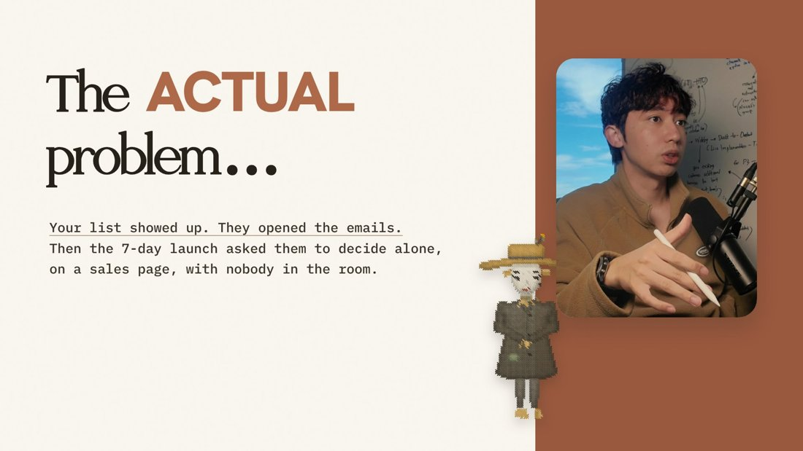
Best first: our own (the VSL Figma file holds many: the Launch Lab page and ticket, Jay's post and our chat with him, The Lab photos), then the real thing from the person we talk about, then licensed stock as a marked placeholder (stock-*), replaced before shipping.
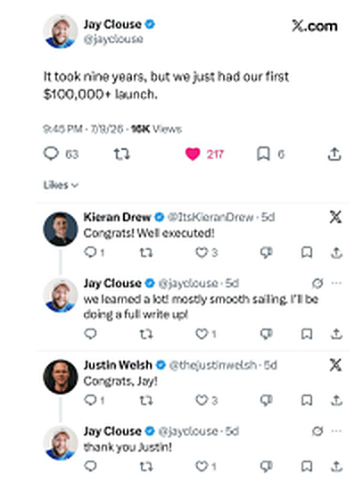
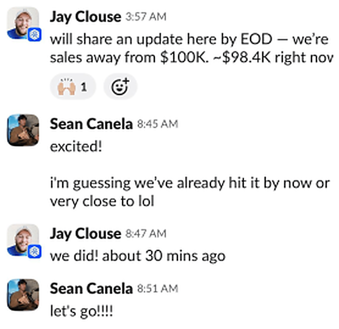
The props are photo cut-outs made in Canva; the stitch art is After Harvest's own cross-stitch (the same family as the website). Use at most two per slide, at the edges, never touching the key words. Each should mean something: wheat is the harvest (results), the ticket is the event, the folders are chapters, the scarecrow is us.
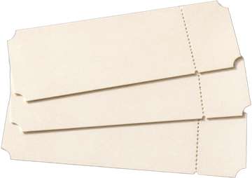
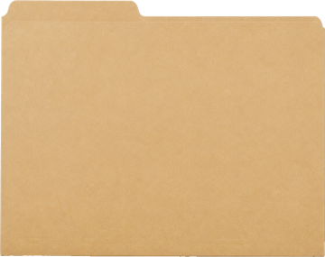
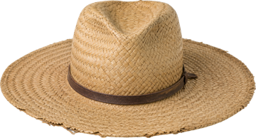
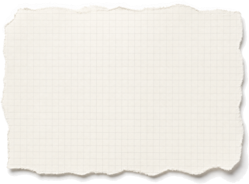
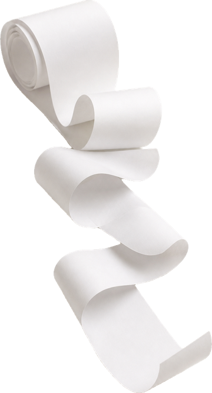
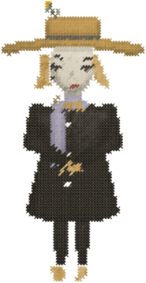
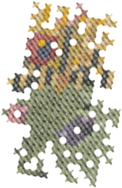
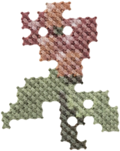
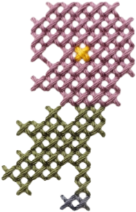
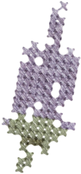
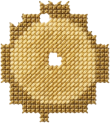
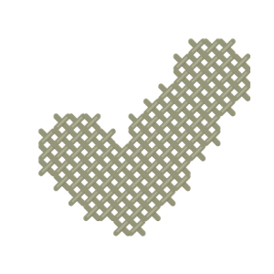
Numbers and short words can be cross-stitched in code: <div data-stitch="$100K" data-cell="15" data-color="#C98A1E"> (stitch.js).
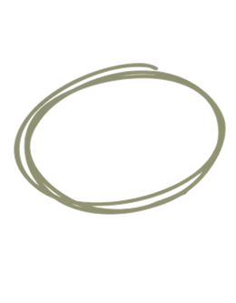
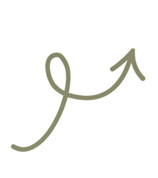
One precise mark per slide at most: the olive circle or loop arrow, or a mark drawn with ink.js (a wobbly underline, circle, arrow or cross-out). A circle never crosses the letters it marks. No handwriting font on slides.
| never | why |
|---|---|
| Tape stuck on a photo | Sean, 29 Oct: "very generic" |
| The caps label / serif headline / italic line stack on every slide | Sean, 28 Oct: "very Claude" |
| A row of identical cards, evenly spaced; the same shadow on everything; confetti | template tells |
| Website parts rebuilt as boxes; a fake UI | show the real screenshot instead (R8) |
| Office stock photos as if they were ours | R7: stock only as a marked placeholder |
| Gradients, glows, neon, gears, AI-busy pictures | Jason's "before" slides [23:31, 35:03] |
| The number, the title or the price as the biggest thing | R12 |
| Numbering 1, 2, 3 on three items | R19 |
| Invented copy, a fake fact, a fake testimonial or count | facts only, each with a source |
| Copying Deya's compositions | Sean, 29 Oct: "a very bad recreation of Deya's" |
The eleven slides of the light set are the base. Use them as templates: pick by the job the line has to do, never the same layout twice in a row.
File: templates/youtube/youtube-light.html. Each slide is one <section>; copy it, change the words and pictures, render. The "audit" line is what part 6 says still needs fixing on that slide.
Three voices: a Literata lead-in, a Hanken shout, an Olivera script line, and a small aside. The face big on the right; props at the edges (wheat, tickets).
Buildlead-in, shout, script line, aside.
Audit: five colours on it; keep rust only on the script line.
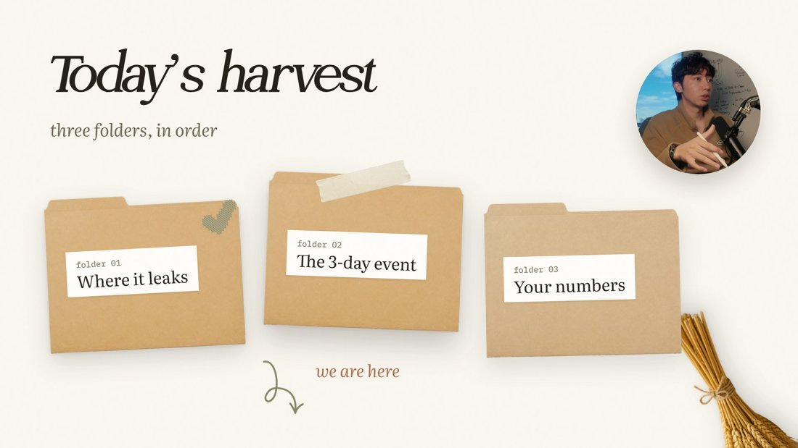
Kraft folders for the chapters, a tick on the finished one, a hand arrow "we are here". It returns at every chapter (R30, R32).
Buildfolder 1, 2, 3; on each return the tick and arrow move.
Audit: make the current folder biggest and lifted, the done one small and ticked, the next faded.
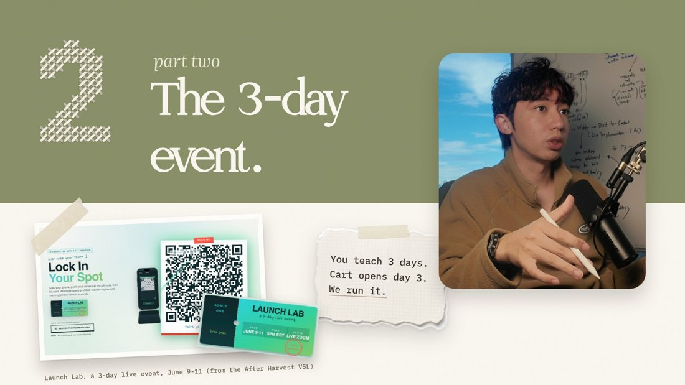
A sage band across the top, a stitched number, the title in cream, the face over the band edge; the real thing for the chapter under the band.
Buildband and title, then the real thing, then its note.
Audit: remove the tape; title as a sentence ("Three days, then the cart opens.").
A two-weight headline with the turn word in rust, a full-height rust panel, the face in a rounded box, the scarecrow beside it.
Buildheadline, then the evidence.
Audit: it tells; show the real 7 launch emails, then the lone sales page.
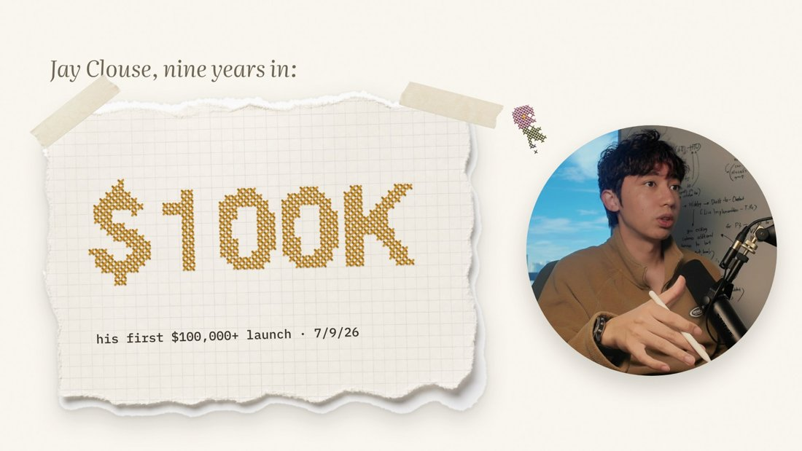
A stitched figure on torn graph paper, a lead-in above, the source line under it.
Buildlead-in, then the figure, then the source.
Audit: the number is the biggest thing (R12); make the meaning big and show the real post.
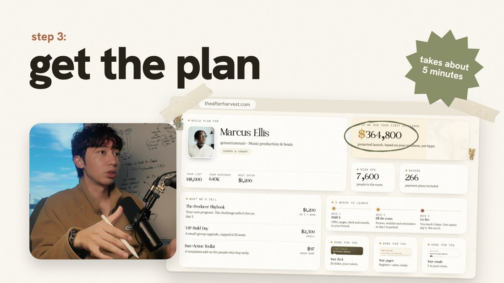
A tiny "step 3:", a huge lowercase line, the real screen on the right, a sticker carrying one fact.
Buildlabel, line, screen, the fact.
Audit: confirm the plan card is a real client's, or label it a sample.
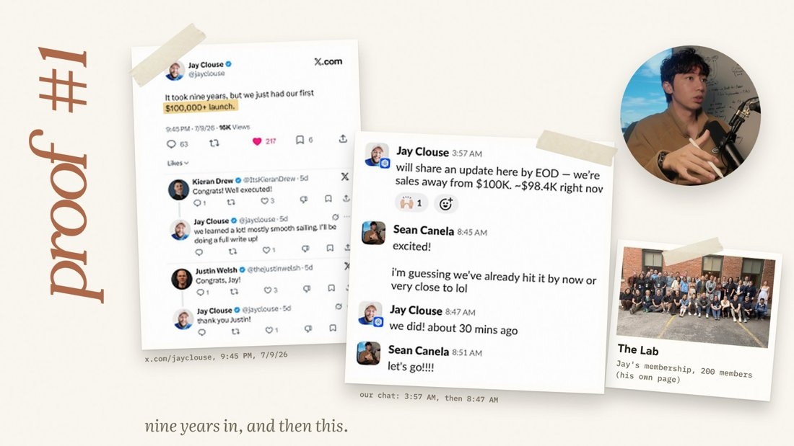
"proof #1" up the edge, the real post with the key line highlighted, the chat, the source lines.
Buildthe post, the highlight; next slide the chat lines one by one.
Audit: three proofs on one slide; split into three; no tape.
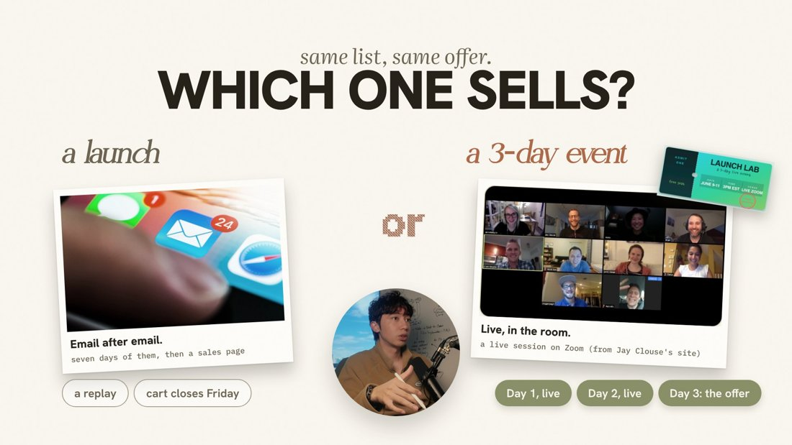
A question title, two sides (the old way faded, the new way lit), "or" stitched between, short chips.
Buildquestion, left side, "or", right side, chips.
Audit: replace the stock inbox with our real one; plain prints, not polaroids.
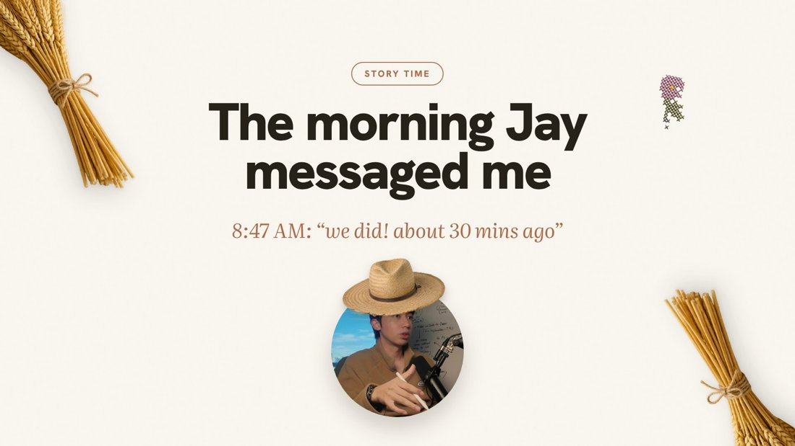
A pill, a centred title, the real line from the story, the face below wearing the straw hat.
Buildpill, title, then the real message.
Audit: show the real chat message instead of typing it.
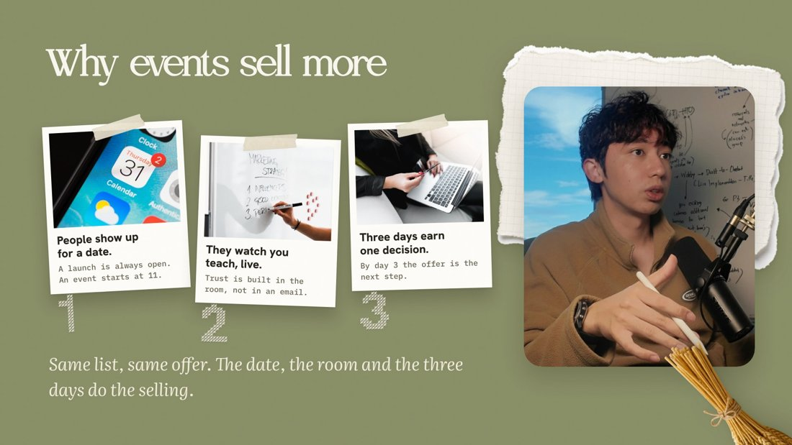
A sage field, a title, the reasons each with a picture, a closing line, the face on the right.
Buildone reason per slide, then all three together as the recap.
Audit: stock photos, numbering, label title. Question title; real things; no numbers.
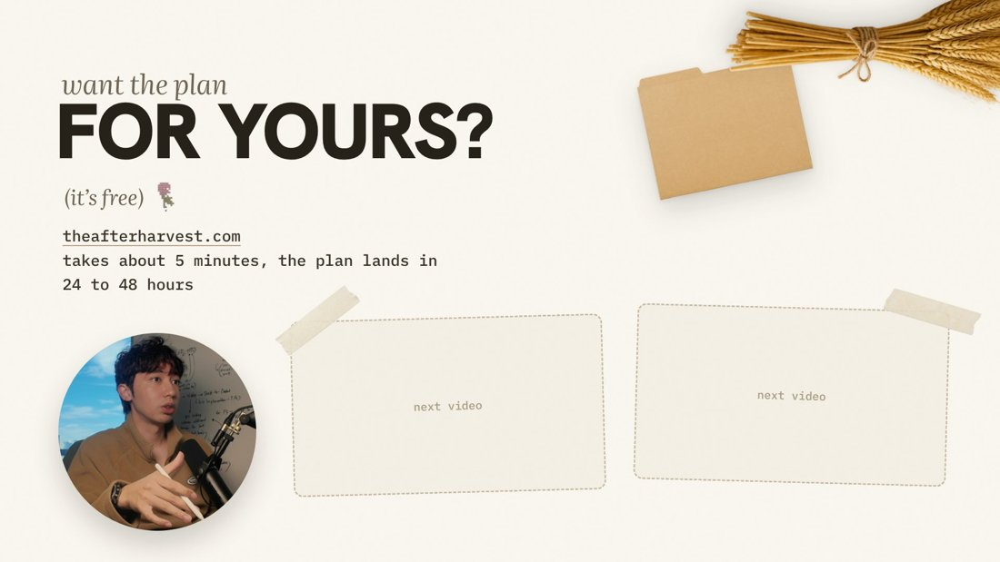
The soft call to action, the URL, the time it takes, and the two video tiles YouTube fills in the last 20 seconds.
Buildthe question, the stack of what is in the plan, then the URL bar.
Audit: show what is in the plan, as Jason's stack without a price (R34).
Jason's method needs these and the light set does not have them yet. Build them in the light set's style.
| layout | what it is | rule |
|---|---|---|
| The mechanism | Day 1 you teach, Day 2 you teach, Day 3 the cart opens; four states: all even, Day 1 current, Day 2 current (Day 1 ticked small, Day 3 faded), Day 3 current; a rust arrow on the current day | R32 |
| The intro tease | later slides shown as slides inside a slide, one per point, then a wall of slides cut off at the bottom | R31 |
| The recap | "So far:" the mechanism and the proof brought back, smaller, ticked | R30 |
| Table + reveal | the revenue calculator built row by row, then the white veil and "+$XK" on top | R27 |
| The countable grid | a number shown as things: registrants as people, years as calendars | R9 |
| The plan stack (CTA) | what is in the free event plan, one bar with theafterharvest.com | R34 |
From a line in the script to a finished slide. Do the steps in order; most mistakes come from skipping step 3.
Until the build tool is written, make one copy of the slide per step (s5a, s5b, s5c), each adding one element, and render them all; they play as the build when cut into the video. The planned tool: a data-step number on each element and a render per step.
Tick every box before a slide or a deck goes to Sean.
The light set (11 slides) checked against Jason's method. Full version: audits/2026-10-29-light-set-vs-jason.md.
The light set already does several things Jason asks for: real screenshots with the source under them, a question as a title, an agenda that shows where we are. What it misses is everything that happens over time: it is 11 still pictures, when his decks are hundreds of slides built one line at a time, with a mechanism slide that comes back and a recap. The look is the strong part; the method is the missing part.
| rule | the light set | fix |
|---|---|---|
| Slides are free (R24) | several slides carry 2-3 ideas | s7 into 3, s10 into 4 |
| Motion every 6 s; build as said (R25, R26) | no builds designed | a build order for every slide |
| The mechanism slide (R32) | the 3 days only as a note and chips | build it with its four states |
| Three exposures; recap (R30) | no recap | add "so far" |
| Intro tease (R31) | agenda is a list of names | slides inside a slide after s1 |
| Least important not biggest (R12) | s5 number biggest; s10 numbers | see slides |
| Titles tell the story (R13) | s3, s4, s10 are labels | sentences or questions |
| Two colours (R15) | up to five colours (s1) | ink + rust |
| Bigger fonts (R18) | body 27-32px, captions 19px | 56/40px |
| Real proof, no stock (R7) | stock on s8, s10 | our inbox, Zoom, calendar invite, checkout |
| Screenshot + source (R8) | sources on s3, s5, s7, s8 | keeps; add highlights on s3, s6 |
| Metaphors (R10) | "harvest" over office folders | one or the other |
| Countable numbers (R9) | none | nine years as calendars |
| The CTA slide (R34) | URL and time, no stack | what is in the plan, one bar |
| slide | keeps | breaks | fix |
|---|---|---|---|
| s1 title | the face big; the promise | five colours | rust only on the script line; fewer props |
| s2 agenda | a tick and "we are here" | all folders equal; mixed metaphor | current biggest, done small, next faded |
| s3 part two | real page and ticket, source | tape; label title; days as a note | no tape; a sentence title; then the mechanism |
| s4 problem | the turn word in rust | all telling; small mono text | show the 7 emails, then the lone sales page |
| s5 number | source line; stitch | the number is biggest | meaning big; calendars; the real post |
| s6 step | real artefact; small step label | plan card origin unchecked | confirm real or label sample |
| s7 proof | real screenshots, sources, highlight | three proofs on one slide; tape | split into three; no tape |
| s8 which | question title; contrast on one slide | stock inbox; crowded | our inbox; plain prints |
| s9 story | story break; real quote | quote typed | the real chat message |
| s10 list | rule of three | stock; numbering; three at once | one per slide, then together; no numbers |
| s11 end | one soft CTA, no scarcity | plan contents not shown | the plan stack, one URL bar |
Where Jason's method and our look disagree. Until Sean answers, the house rule in the last column applies.
| # | Jason | our look today | house rule until decided |
|---|---|---|---|
| 1 | "better to look ugly than pretty" [16:06] | "nicely made" (28 Oct) | crafted and warm, never slick |
| 2 | cut what does not persuade [5:34] | full and a little playful (28 Oct) | two props at most, at the edges |
| 3 | one font, three faces, no italics [13:35, 33:10] | three type voices (28 Oct) | two voices per slide at most |
| 4 | the webcam beside the slide; no presenter photo [11:58] | the face circle on every slide (brief) | keep for YouTube; webinar decks to decide |
| 5 | ~500 slides, motion every 6 s [28:44] | 11 still slides | builds every 5-10 s in teaching |
| 6 | emojis as count icons [37:54] | stitch icons and props | our stitch icons |
| 7 | no AI pictures [20:05] | Canva-made props | props yes, as props only; never as proof |
| 8 | CTA in a yellow bar, blue link [41:47] | our colours | our colours; the link in rust, underlined |
The repo is github.com/seeeadd/fladdy (branch main).
| what | where |
|---|---|
| This guide (HTML source and PDF) | guide/ |
| The brand kit (fonts, colours, props, stitch art, marks, real pictures, face, slide references) | brand-kit/ |
| The light set (the base layouts) | templates/youtube/youtube-light.html |
| Rendering slides | python3 scripts/render_slides.py <file.html> |
| Real pictures and their sources | templates/youtube/art/real/SOURCES.md |
| Jason's slide video, torn down | jason-fladlien-videos/01 .../teardown.md |
| All teardowns | TEARDOWNS.md |
| The method, short (read first) | playbooks/core.md, playbooks/slides.md |
| Sean's rulings | rulings.md |
| The slide rules | rules/slide-method.md |
| This audit, full | audits/2026-10-29-light-set-vs-jason.md |
| Deya's audit | sources/inspiration/deya/AUDIT.md |
Fonts: Olivera is the free demo from dafont (Sean, 28 Oct: use the demo); Literata, Hanken Grotesk and IBM Plex Mono are open-source (SIL Open Font License).